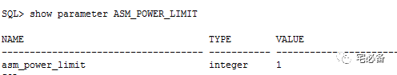
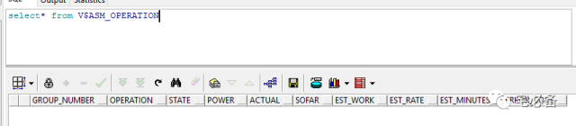

更改ASM磁盘组
原创 2017-10-27 Oracle 宅必备
这个专题讲ASM相关的内容
这节讲如何修改磁盘组，主要包括：
-
向磁盘组增加磁盘
-
从磁盘组删除磁盘
-
调整磁盘组中磁盘的大小
-
取消删除磁盘组磁盘
-
手动重新平衡磁盘
我们可以使用alter命令来修改磁盘组，例如新增，删除，修改大小磁盘等操作，Oracle建议同一个语句中同时进行多个操作
1. 向磁盘组增加磁盘
可使用alter diskgroup的ADD子句新增磁盘
注意：新增加的磁盘不能属于其他磁盘组
1.1 使用通配符进行添加
ALTER DISKGROUP dgroup1 ADD DISK
'/devices/diskd*'
REBALANCE POWER 5 WAIT;
1.2 手动指定各个磁盘
ALTER DISKGROUP dgroup1 ADD DISK
'/devices/diska5' NAME diska5,
'/devices/diska6' NAME diska6,
'/devices/diska7' NAME diska7,
'/devices/diska8' NAME diska8,
1.3 使用force强制增加磁盘
force参数在如下情形使用:
-
新增加的磁盘属于一个已经不存在的磁盘组时
-
如新磁盘在正常的磁盘组，则增加后该磁盘组将无法mount
ALTER DISKGROUP dgroup2 ADD DISK
'/devices/diskc3' FORCE;
1.4 指定故障组
默认情况下会将每个磁盘划入各自的故障组
alter diskgroup DG2
add failgroup FG1 disk '/dev/oracleasm/disks/VOL7'
add failgroup FG2 disk '/dev/oracleasm/disks/VOL8'
add failgroup FG3 disk '/dev/oracleasm/disks/VOL9';
2. 删除磁盘组的磁盘
可使用alter diskgroup的DROP 子句新增磁盘
使用force参数强制删除磁盘，即使ASM不能识别或写入该磁盘
2.1 删除磁盘组磁盘
ALTER DISKGROUP dgroup1 DROP DISK diska5;
2.2 删除并新增另外一个磁盘
ALTER DISKGROUP dgroup1 DROP DISK diska5
ADD FAILGROUP failgrp1 DISK '/devices/diska9' NAME diska9;
3. 修改磁盘组磁盘大小
可使用alter diskgroup的resize子句做如下操作:
-
更改磁盘组中所有磁盘的大小
-
更改制定磁盘的的大小
-
更改制定故障组内所有磁盘的大小
ALTER DISKGROUP dgroup1
RESIZE DISKS IN FAILGROUP failgrp1 SIZE 100G;
如果不指定size参数，将设置为系统识别到的大小
上面的语句修改dgroup1磁盘组的failgrp1故障组所有磁盘的大小为100G
4. 取消删除磁盘
可以使用ALTER DISKGROUP 的 UNDROP DISKS 字句来取消挂起状态的删除磁盘动作
如果drop动作已经完成或者使用了force命令删除磁盘，则无法使用取消
ALTER DISKGROUP dgroup1 UNDROP DISKS;
5. 手动磁盘重平衡操作
ASM会在磁盘组配置更改后自动进行平衡，默认情况下更改命令会立即返回成功
我们可以使用wait参数使其等到重新平衡完成后才返回成功，这个在脚本中会比较有用
如果在ALTER DISKGROUP 没有指定POWER参数，则POWER值由ASM_POWER_LIMIT参数指定

其取值范围从0到11
为0表示不会自动平衡，需要手动输入命令平衡
越高重平衡速度越快但也越耗资源
我们可以使用如下语句手动进行平衡
ALTER DISKGROUP dgroup2 REBALANCE POWER 5 WAIT;
如指定wait参数则可以使用ctrl+c组合键取消
可以通过V$ASM_OPERATION 视图查看平衡操作

好了，这节讲了磁盘组的更改命令，下节ASM 磁盘的发现